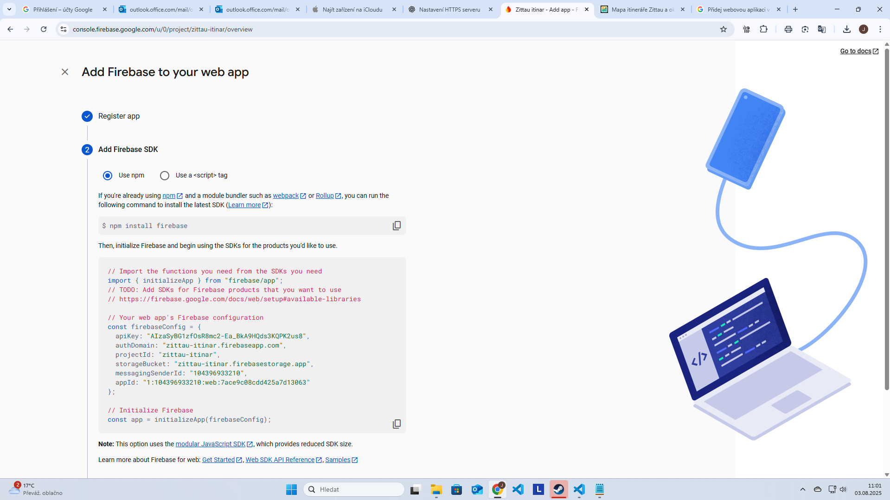

Interaktivní mapa psího itineráře – Zittau a okolí
Online
Přidej na plochu: klikni na tlačítko sdílení → Přidat na plochu
Informace o itineráři
Verze itineráře:
Naposledy uloženo:
Log chyb:
Snímek obrazovky
Ukázka nastavení webové aplikace s Firebase SDK:
